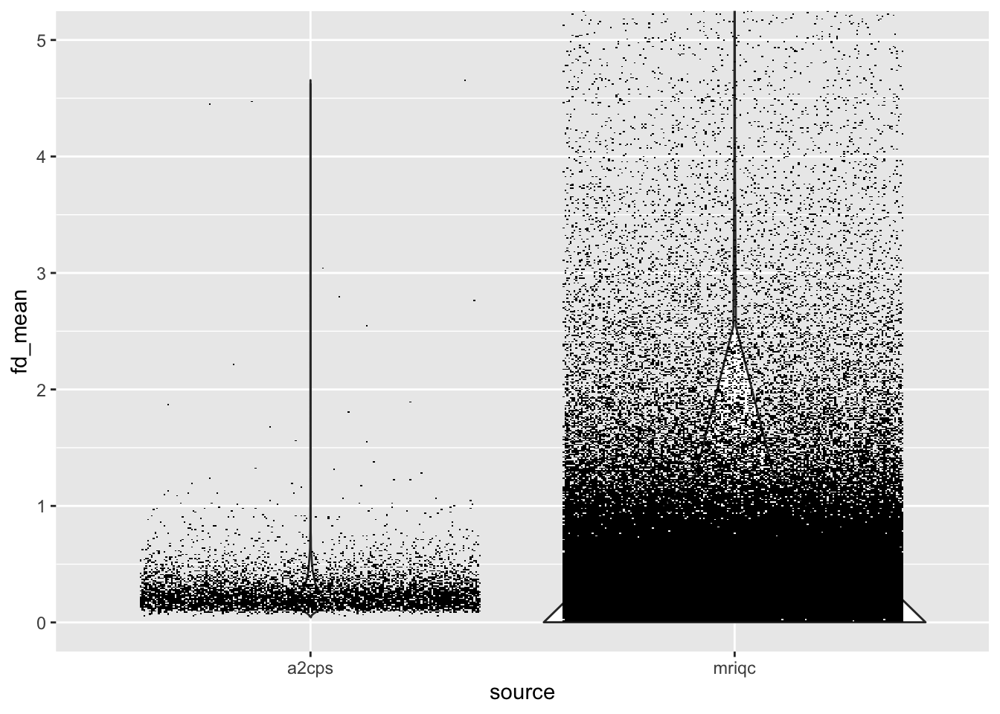
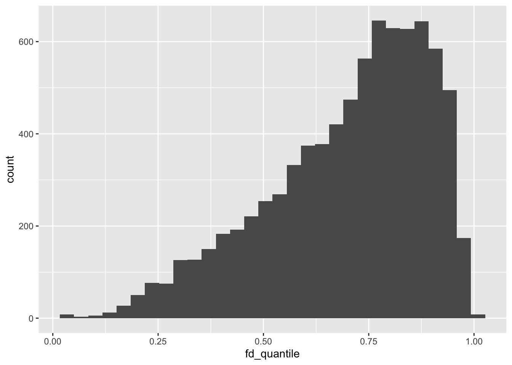

library(readr)
library(dplyr)
library(ggplot2)
library(duckplyr)
library(scattermore)11 MRIQC
Part of the A2CPS MRI quality control procedure Section 4.1.2 uses metrics derived from the MRI Quality Control (MRIQC) pipeline (Esteban et al., 2017). However, MRIQC provides several metrics beyond the subset used by A2CPS. This kit reviews those metrics and shows how they compare with others that are available in the MRIQC database.
11.1 Starting Project
11.1.1 Locate Data
On TACC, the neuroimaging data are stored underneath the releases. For example, data release v2.#.# is underneath
pre-surgery/mrisThe MRIQC metrics are underneath derivatives/mriqc.
11.1.2 Extract Data
The A2CPS pipeline produces a standard set of MRIQC outputs, including both participant- and group-level results. For a detailed explanation of the outputs, please see the official MRIQC documentation. At a high-level, the outputs include:
- participant-level metrics: underneath sub-[recordid]/ses-[protocolid]/{anat,func,dwi}
- participant-level reports: html documents that display participant-level figures related to data quality and MRIQC preprocessing
- group-level results: files with the prefix
group_that collate the participant-level results
$ ls /corral-secure/projects/A2CPS/products/consortium-data/pre-surgery/mris/derivatives/mriqc | head
group_bold.html
group_bold.tsv
group_dwi.html
group_dwi.tsv
group_T1w.html
group_T1w.tsv
sub-10003
sub-10003_ses-V1_dwi.html
sub-10003_ses-V1_T1w.html
sub-10003_ses-V1_task-cuff_run-01_bold.htmlFor example, here are all of the metrics available for the functional data.
group_bold <- read_tsv("data/mriqc/group_bold.tsv")
group_bold |>
head()| size_x | summary_fg_p05 | gsr_x | fd_perc | fwhm_x | fwhm_avg | gsr_y | size_y | gcor | summary_bg_k | fwhm_z | spacing_z | summary_bg_median | summary_fg_mean | summary_fg_p95 | size_z | summary_bg_mad | spacing_x | summary_bg_n | summary_bg_p95 | dvars_nstd | summary_bg_stdv | summary_fg_k | spacing_tr | size_t | snr | summary_fg_stdv | tsnr | dvars_vstd | dvars_std | aqi | fd_mean | fd_num | fber | dummy_trs | spacing_y | aor | efc | summary_bg_mean | fwhm_y | summary_bg_p05 | summary_fg_mad | summary_fg_median | summary_fg_n | bids_name |
|---|---|---|---|---|---|---|---|---|---|---|---|---|---|---|---|---|---|---|---|---|---|---|---|---|---|---|---|---|---|---|---|---|---|---|---|---|---|---|---|---|---|---|---|---|
| 90 | 255 | -0.0121202 | 92.77652 | 3.069183 | 2.910943 | 0.0296651 | 90 | 0.0039961 | 69.6477 | 2.866987 | 2.4 | 10 | 1072.0242 | 1873 | 60 | 14.8260 | 2.40000 | 389198 | 167 | 114.37294 | 89.8264 | 2.5801 | 0.8000000 | 443 | 2.220860 | 468.2846 | 16.08951 | 0.9862437 | 1.283511 | 0.0532005 | 0.9142547 | 411 | 10858.5127 | 7 | 2.40000 | 0.0045815 | 0.4243 | 38.3237 | 2.796658 | 0 | 356.6813 | 1040 | 96802 | sub-10355_ses-V3_task-cuff_run-01_bold |
| 90 | 290 | 0.0088436 | 47.40406 | 3.250654 | 2.996301 | 0.0279804 | 90 | 0.0035719 | 97.8685 | 2.940925 | 2.4 | 14 | 1215.6718 | 2224 | 60 | 20.7531 | 2.40000 | 366337 | 248 | 39.78583 | 153.3359 | 4.6670 | 0.8000000 | 443 | 2.032800 | 569.6553 | 26.74147 | 0.9690394 | 1.090245 | 0.0189762 | 0.2202484 | 210 | 7218.0190 | 7 | 2.40000 | 0.0046997 | 0.4688 | 58.3281 | 2.797325 | 0 | 399.2685 | 1158 | 119663 | sub-20041_ses-V3_task-cuff_run-02_bold |
| 90 | 182 | -0.0173981 | 38.47875 | 2.851042 | 3.053996 | 0.0641578 | 90 | 0.0022321 | 50.8674 | 3.215412 | 2.4 | 17 | 471.1883 | 806 | 60 | 4.6468 | 2.40000 | 388706 | 127 | 36.21926 | 59.6670 | 0.5428 | 0.8000000 | 447 | 2.444261 | 184.9220 | 35.41455 | 0.9611394 | 1.029062 | 0.0133520 | 0.1717237 | 172 | 731.6926 | 3 | 2.40000 | 0.0003907 | 0.4995 | 35.7919 | 3.095533 | 14 | 165.4644 | 452 | 97294 | sub-20399_ses-V3_task-cuff_run-02_bold |
| 96 | 6845 | -0.0110442 | 94.15730 | 2.686887 | 2.534638 | 0.0287072 | 96 | 0.0061725 | 70.4831 | 2.449446 | 2.4 | 26 | 19412.4011 | 27486 | 54 | 38.5477 | 2.21875 | 394502 | 3262 | 66.94345 | 1492.6184 | 1.4292 | 0.7999997 | 445 | 3.529797 | 5676.2202 | 25.88404 | 0.9959189 | 1.174573 | 0.0453041 | 0.7045787 | 419 | 584686.2500 | 5 | 2.21875 | 0.0025314 | 0.4514 | 699.5358 | 2.467583 | 0 | 3896.1295 | 20036 | 103162 | sub-11069_ses-V3_task-cuff_run-02_bold |
| 90 | 306 | -0.0119028 | 55.32880 | 3.275942 | 3.119962 | 0.0276843 | 90 | 0.0013895 | 276.4821 | 3.100054 | 2.4 | 12 | 1143.9366 | 1970 | 60 | 17.7912 | 2.40000 | 385415 | 181 | 41.74820 | 138.2481 | 3.0032 | 0.8000000 | 441 | 2.274493 | 490.6563 | 20.88673 | 0.9053607 | 1.014526 | 0.0416413 | 0.2101655 | 244 | 8937.8770 | 9 | 2.40000 | 0.0025078 | 0.4332 | 45.6822 | 2.983891 | 0 | 366.2935 | 1116 | 100585 | sub-10295_ses-V1_task-cuff_run-01_bold |
| 90 | 191 | 0.0039095 | 29.93197 | 2.805417 | 2.664839 | 0.0147271 | 90 | 0.0099024 | 98.7085 | 2.593362 | 2.4 | 11 | 1129.2300 | 1991 | 60 | 16.3053 | 2.40000 | 398773 | 163 | 38.32907 | 103.9497 | 2.2260 | 0.8000000 | 441 | 2.206411 | 513.9539 | 31.49358 | 0.9654090 | 1.134152 | 0.0140956 | 0.1442416 | 132 | 11567.4209 | 9 | 2.40000 | 0.0010844 | 0.4023 | 40.0061 | 2.595737 | 0 | 367.4937 | 1134 | 87227 | sub-10326_ses-V1_task-cuff_run-02_bold |
For a detailed description of these metrics, please see the official MRIQC documentation.
11.1.3 Comparison with Reference Distributions
One strength of MRIQC is that the pipeline automatically stores the metrics in a centralized database. The centralized database is available via the MRIQC Web API. An example of interacting with the API can be found in https://github.com/psadil/mriqc-export. In this kit, the metrics have already been downloaded and stored in a set parquet files. Let’s use that reference set to rate A2CPS. One of the most important determiners of quality is motion, so let’s focus on the average Framewise Displacement.
all_bold <- duckplyr::read_parquet_duckdb(
fs::dir_ls(
"data/mriqcwebapi/bold",
recurse = TRUE,
glob = "*parquet"
)
) |>
dplyr::select(`_id`, fd_mean) |>
collect()
nrow(all_bold)[1] 1245400Loading them, we see that there are over 1 million entries in the database.
Let’s create a simple scatter plot to compare motion in A2CPS against motion in the MRIQC database. Note that because there are so many points to display, we’re using the package scattermore.
dplyr::bind_rows(list(a2cps = group_bold, mriqc = all_bold), .id = "source") |>
ggplot(aes(x = source, y = fd_mean)) +
geom_violin() +
geom_scattermore(position = position_jitter(height = 0)) +
coord_cartesian(ylim = c(0, 5))
Quantitatively, the dataset is in the upper quantiles of motion, which is to be expected given the study population.
empirical_motion_cdf <- ecdf(all_bold$fd_mean)
group_bold |>
mutate(
fd_quantile = empirical_motion_cdf(fd_mean)
) |>
ggplot(aes(x = fd_quantile)) +
geom_histogram()
11.2 Considerations While Working on the Project
11.2.1 Framewise Displacement and A2CPS
A key element of the A2CPS Quality Ratings for raw data is based on Framewise Displacement. Although MRIQC provides a measurement of framewise displacement, it is not the one that is entered into the rating. Instead, A2CPS uses the estimate of motion from fMRIPrep, what it refers to as rmsd, also referred to as FD_Jenk, in reference to the method as described in Jenkinson et al. (2002). The measure of motion provided by MRIQC is sometimes referred to as FD_Power (e.g., Parkes et al. (2018)), referring to Power et al. (2012). FD_Power measures the distance travelled by a point on the edge of a sphere between frames (usually using a sphere of 50 mm), whereas FD_Jenk measures the average distance traveled by the entire sphere (usually using a sphere of 80 mm). The two measures are often almost perfectly correlated, but FD_Power tends to be about 1.7x as high as FD_Jenk.
Jenkinson, M., Bannister, P., Brady, M., & Smith, S. (2002). Improved optimization for the robust and accurate linear registration and motion correction of brain images. Neuroimage, 17(2), 825–841. https://doi.org/10.1006/nimg.2002.1132
Parkes, L., Fulcher, B., Yücel, M., & Fornito, A. (2018). An evaluation of the efficacy, reliability, and sensitivity of motion correction strategies for resting-state functional MRI. Neuroimage, 171, 415–436. https://doi.org/10.1016/j.neuroimage.2017.12.073
Power, J. D., Barnes, K. A., Snyder, A. Z., Schlaggar, B. L., & Petersen, S. E. (2012). Spurious but systematic correlations in functional connectivity MRI networks arise from subject motion. Neuroimage, 59(3), 2142–2154. https://doi.org/10.1016/j.neuroimage.2011.10.018
11.2.2 MRIQC Versions
Please be aware that, across versions of MRIQC, the manner in which MRIQC calculates metrics has changed. These changes can lead to substantial differences in the distribution of metrics. For one set of examples, please see this GitHub issue.
11.2.3 Variability Across Scanners
Many of these metrics exhibit substantial variability across the scanners, which may confound some analyses. For example, the scanner “NS” (serial number: 70032) has the “Prescan Normalization” feature turned off, which produces substantial intensity inhomogeneity in the images. This inhomogeneity is very noticeable in the images, resulting in much voxels near the edge of the field-of-view being much brighter than voxels in the center of the field-of-view. Unfortunately, this spatial pattern confounds one of the metrics produced by MRIQC that is designed to estimate ghosting: the “Ghost-to-Signal” Ratio. That is, the values for this ratio suggest that the NS scanner suffers from substantial ghosting, but those values are instead driven primarily by intensity inhomogeneity.
As another example, the scanner UC (serial number: 71399) is unique in that the structural images were collected with “Image Domain Parallel Imaging”. This form of parallel imaging causes a near total suppression of the background signal (that is, most background voxels have intensity 0). Several of the MRIQC metrics incorporate the background signal, and so this noise suppression causes those metrics to have a fundamentally different scaling as compared to metrics calculated on images without that suppression. Consider the “Dietrich” version of the signal-to-noise ratio (Dietrich et al., 2007), which uses the standard deviation of the intensity in the background to scale the average intensity of the foreground, producing substantially larger estimates of the signal-to-noise ratio.
Dietrich, O., Raya, J. G., Reeder, S. B., Reiser, M. F., & Schoenberg, S. O. (2007). Measurement of signal-to-noise ratios in MR images: Influence of multichannel coils, parallel imaging, and reconstruction filters. Journal of Magnetic Resonance Imaging: An Official Journal of the International Society for Magnetic Resonance in Medicine, 26(2), 375–385. https://doi.org/10.1002/jmri.20969
For a detailed description of these particular issues, please see these slides. In general, interpreting the MRIQC metrics should be done with caution.
11.2.4 Citations
If you use these results, please cite the MRIQC report (Esteban et al., 2017) and all relevant citations of the pipeline configuration.
Esteban, O., Birman, D., Schaer, M., Koyejo, O. O., Poldrack, R. A., & Gorgolewski, K. J. (2017). MRIQC: Advancing the automatic prediction of image quality in MRI from unseen sites. PloS One, 12(9), e0184661. https://doi.org/10.1371/journal.pone.0184661
In publications or presentations including data from A2CPS, please include the following statement as attribution:
Data were provided [in part] by the A2CPS Consortium funded by the National Institutes of Health (NIH) Common Fund, which is managed by the Office of the Director (OD)/ Office of Strategic Coordination (OSC). Consortium components and their associated funding sources include Clinical Coordinating Center (U24NS112873), Data Integration and Resource Center (U54DA049110), Omics Data Generation Centers (U54DA049116, U54DA049115, U54DA049113), Multi-site Clinical Center 1 (MCC1) (UM1NS112874), and Multi-site Clinical Center 2 (MCC2) (UM1NS118922).
Note
Berardi, G., Frey-Law, L., Sluka, K. A., Bayman, E. O., Coffey, C. S., Ecklund, D., Vance, C. G. T., Dailey, D. L., Burns, J., Buvanendran, A., McCarthy, R. J., Jacobs, J., Zhou, X. J., Wixson, R., Balach, T., Brummett, C. M., Clauw, D., Colquhoun, D., Harte, S. E., … Wandner, L. D. (2022). Multi-site observational study to assess biomarkers for susceptibility or resilience to chronic pain: The acute to chronic pain signatures (A2CPS) study protocol. Frontiers in Medicine, 9. https://doi.org/10.3389/fmed.2022.849214
Sluka, K. A., Wager, T. D., Sutherland, S. P., Labosky, P. A., Balach, T., Bayman, E. O., Berardi, G., Brummett, C. M., Burns, J., Buvanendran, A., et al. (2023). Predicting chronic postsurgical pain: Current evidence and a novel program to develop predictive biomarker signatures. Pain, 164(9), 1912–1926. https://doi.org/10.1097/j.pain.0000000000002938
Sadil, P., Arfanakis, K., Bhuiyan, E. H., Caffo, B., Calhoun, V. D., Clauw, D. J., DeLano, M. C., Ford, J. C., Gattu, R., Guo, X., Harris, R. E., Ichesco, E., Johnson, M. A., Jung, H., Kahn, A. B., Kaplan, C. M., Leloudas, N., Lindquist, M. A., Luo, Q., … Chronic Pain Signatures Consortium, T. A. to. (2024). Image processing in the acute to chronic pain signatures (A2CPS) project. bioRxiv. https://doi.org/10.1101/2024.12.19.627509
When using neuroimaging derivatives, please also cite Sadil et al. (2024).